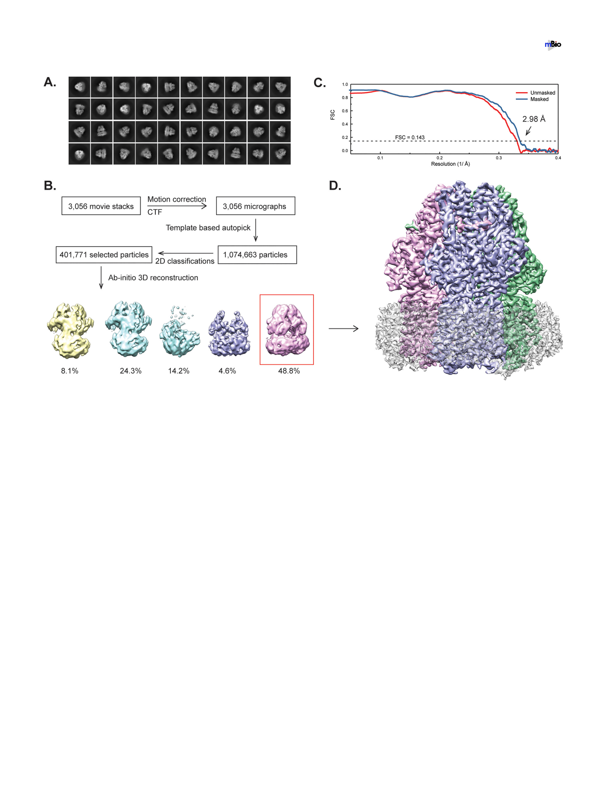

Cryo-EM Structure of A. baumannii Efflux Pump
®
FIG 1 Cryo-EM analysis of the A. baumannii AdeB multidrug efflux pump. (A) Representative 2D classes. (B) Data processing flowchart with particle distributions.
(C) Fourier shell correlation (FSC) curves showing resolution of 2.98 Å. (D) Side view of the sharpened cryo-EM map of the AdeB efflux pump in a lipid nanodisc.
The three AdeB protomers are colored pink, blue, and green. Density contributed by the nanodisc is in light gray.
domain can be divided into six subdomains, PN1, PN2, PC1, PC2, DN, and DC (Fig. 2A).
Subdomains PN1, PN2, PC1, and PC2 form the portal domain, whereas subdomains DN
and DC contribute to form the docking domain of the pump.
Typically, a periplasmic cleft is formed between subdomains PC1 and PC2 of
HAE-RND proteins. This cleft marks the entrance, which permits substrates to enter the
pump via the periplasm. The multidrug binding sites that are responsible for recog-
nizing and creating a path for substrate export are located deep inside this cleft.
Therefore, this periplasmic cleft is very critical for the function of the pump.
The trimeric protein has a 3-fold symmetrical architecture throughout. Each
protomer within the trimer is identical in conformation, suggesting that these three
AdeB molecules are at the same conformational state. Additional densities, correspond-
ing to the belt formed by nanodiscs, were found to encircle the transmembrane region
of trimeric AdeB. We also found six lipid molecules, which were modeled as phosphati-
dylethanolamine (PE) moieties, that form a ring in the interior surface of the AdeB
trimer and are bound at the level of the outer leaflet of the cytoplasmic membrane
(Fig. 2A). Three of these lipid moieties are also located at the protein-protein interfaces,
possibility participating in stabilization of the trimeric oligomerization of the AdeB
pump (Fig. 2A). These lipid molecules may be capable of modulating the function of
this multidrug efflux pump.
The three AdeB protomers display a unique conformational state, where the
periplasmic cleft created by subdomains PC1 and PC2 is closed. Each AdeB molecule is
occluded, and no channel is found within the periplasmic domain. This conformation
is also very similar to the resting state of the CmeB (27) and CusA (30–32) efflux pumps.
Therefore, the conformation of these three protomers should represent the resting
state of AdeB. On the basis of the cryo-EM structure of AdeB, we suspect that this
multidrug efflux pump may remain in its resting form when the pump substrate is
absent.
July/August 2019 Volume 10 Issue 4 e01295-19
mbio.asm.org 3